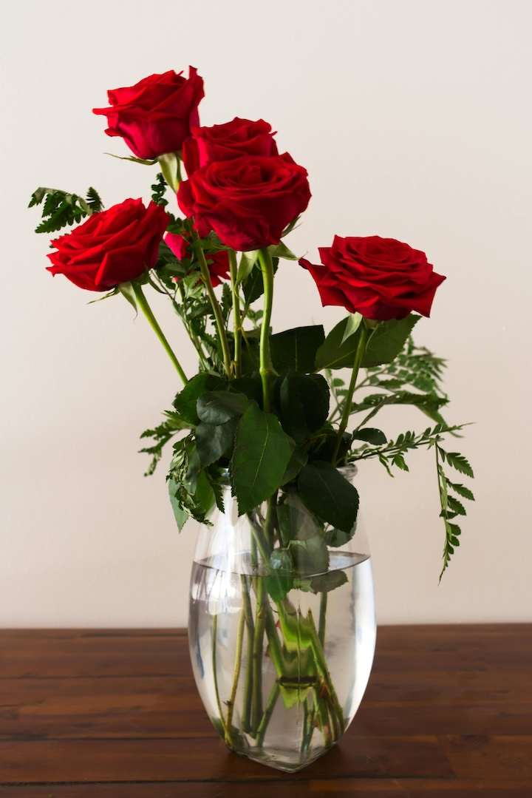

Welcome to our website showcasing popular flowers!
Roses are one of the most beloved flowers, known for their beauty and fragrance. They have a rich history dating back thousands of years, symbolizing love and passion.
Tulips are vibrant flowers that originated in Persia and became popular in the Netherlands during the Dutch Golden Age. They represent perfect love and elegance.
Lilies are elegant flowers with various meanings across cultures, often symbolizing purity and renewal. They have been cultivated for centuries and are admired for their beauty.
Sunflowers are bright and cheerful flowers that symbolize happiness and positivity. Native to the Americas, they have a long history as a source of food and inspiration.
Orchids are exotic and diverse flowers with a fascinating history. They are associated with luxury and beauty, often used in ornamental displays and as gifts.
We are a passionate team dedicated to exploring the beauty and history of flowers. Our mission is to share our love for nature's wonders with the world.